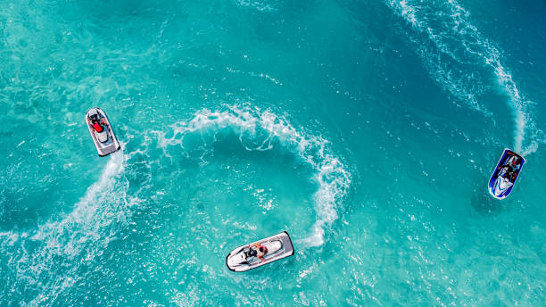

Book ReservationDiscover the Beauty of Taniti
Taniti is a beautiful tropical island in the Pacific known for its white-sand beaches, lush rainforests, and welcoming island culture. Visitors come to Taniti to relax, explore, and experience a wide variety of activities ranging from snorkeling along coral reefs and hiking through scenic rainforest trails to enjoying fresh local cuisine and vibrant markets in Taniti City. Whether you are planning a relaxing beach vacation, a family adventure, or a romantic getaway, Taniti offers comfortable accommodations, exciting attractions, and easy transportation options that make exploring the island simple and enjoyable for every traveler.
Adventure Awaits
From hiking trails to water sports, Taniti offers a wide range of activities for thrill-seekers and nature lovers alike.
Cultural Richness
Immerse yourself in the vibrant culture of Taniti through its festivals, cuisine, and local traditions.
Relaxation Paradise
Unwind on our pristine beaches, indulge in spa treatments, or simply enjoy the serene beauty of Taniti.